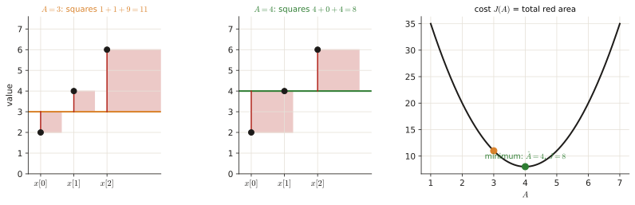
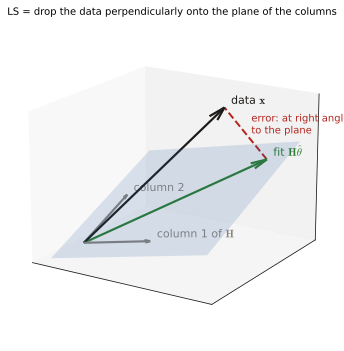
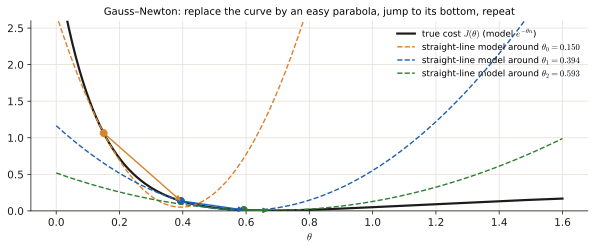
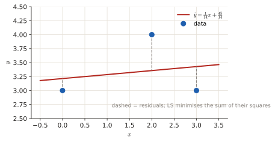

2.4 Least squares#
Least squares (LS) is the estimator you use when you know the shape of the signal but nothing about the noise distribution. It has appeared as a line fit (April 2025, 1 p), a statement MC, and an older nonlinear-model exercise. This page starts with "fit a line through points" and builds the general formula from it.
Before this page
- Derivatives and setting them to zero (0.4); the idea of an estimator (2.1)
- Solving a 2×2 linear system with Cramer's rule (Toolbox)
- Vectors and matrices as lists of numbers: \(\mathbf x\) = a column of the \(N\) data values, \(\mathbf H\) = a table of known numbers (0.1)
If you read only one thing: least squares picks the parameters that make the model's predictions as close as possible to the data, where "close" = the sum of the squared differences. For a line fit this gives two simple equations; for any linear model it gives \(\hat{\boldsymbol\theta}=(\mathbf H^T\mathbf H)^{-1}\mathbf H^T\mathbf x\).
1 · The idea, from zero#
You have data \(x[n]\) and a model \(s[n;\theta]\) with an unknown parameter \(\theta\) that should explain it. Choose \(\theta\) so that the model is as close as possible to the data, measuring "close" by the sum of the squared differences (squares so that positive and negative errors do not cancel, and big errors count much more):
(\(\arg\min\) = "the value of \(\theta\) where \(J\) is smallest"; \(J\) is the cost.) No PDF of the noise is needed. That is the main difference with MLE (2.1): if the noise is white Gaussian the two coincide (the Gaussian log-likelihood is \(-\frac1{2\sigma^2}J\) plus a constant).
Smallest possible example: one number from noisy copies
Model \(x[n]=A+w[n]\), data \(x=[2,4,6]\). \(J(A)=(2-A)^2+(4-A)^2+(6-A)^2\). Derivative: \(-2\big[(2-A)+(4-A)+(6-A)\big]=0\Rightarrow3A=12\Rightarrow\hat A=4\): the sample mean. \(J(4)=4+0+4=8\) is the smallest possible; e.g. \(J(3)=1+1+9=11\).

1.1 Fitting a line (the exam favourite)#
Model \(y=ax+b\) (slope \(a\), intercept \(b\)) through points \((x_i,y_i)\), \(i=1..n\). The cost is \(J(a,b)=\sum_i(y_i-ax_i-b)^2\). Two unknowns, so two derivatives set to 0:
- \(\dfrac{\partial J}{\partial a}=-2\sum_ix_i(y_i-ax_i-b)=0\ \Rightarrow\ \Big(\sum x_i^2\Big)a+\Big(\sum x_i\Big)b=\sum x_iy_i\)
- \(\dfrac{\partial J}{\partial b}=-2\sum_i(y_i-ax_i-b)=0\ \Rightarrow\ \Big(\sum x_i\Big)a+n\,b=\sum y_i\)
Recipe: fit a line \(y=ax+b\) to points \((x_i,y_i)\)
- Compute the five sums \(n,\ \sum x,\ \sum x^2,\ \sum y,\ \sum xy\).
- Write the 2×2 system above.
- Solve with Cramer's rule (toolbox): for \(\begin{cases}p\,a+q\,b=r\\q\,a+n\,b=s\end{cases}\), \(\det=pn-q^2\), \(a=\frac{rn-qs}{\det}\), \(b=\frac{ps-qr}{\det}\).
- (Check) the residuals \(y_i-ax_i-b\) add up to 0 and are orthogonal to the \(x_i\) (\(\sum x_i\cdot\text{res}_i=0\)).
1.2 The linear model in matrix form#
If the signal is a weighted sum of known columns, \(\mathbf x=\mathbf H\boldsymbol\theta+\mathbf w\) (\(\mathbf H\) is \(N\times K\): row \(n\) holds the \(K\) known numbers that multiply the parameters in sample \(n\); \(\mathbf w\) = noise), then \(J(\boldsymbol\theta)=\lVert\mathbf x-\mathbf H\boldsymbol\theta\rVert^2\). Setting its gradient to zero gives the normal equations \(\mathbf H^T\mathbf H\hat{\boldsymbol\theta}=\mathbf H^T\mathbf x\), so
Check with the line fit: \(\boldsymbol\theta=[a,b]^T\) and row \(i\) of \(\mathbf H\) is \([x_i,\ 1]\). Then \(\mathbf H^T\mathbf H=\begin{bmatrix}\sum x_i^2&\sum x_i\\\sum x_i&n\end{bmatrix}\) and \(\mathbf H^T\mathbf y=\begin{bmatrix}\sum x_iy_i\\\sum y_i\end{bmatrix}\): exactly the 2×2 system above.
- Geometry: \(\mathbf H\hat{\boldsymbol\theta}\) is the projection of \(\mathbf x\) onto the space spanned by the columns of \(\mathbf H\). The normal equations say \(\mathbf H^T(\mathbf x-\mathbf H\hat{\boldsymbol\theta})=\mathbf 0\): the error \(\mathbf x-\mathbf H\hat{\boldsymbol\theta}\) is orthogonal to every column (it is not in that space; the fit is). Picture below.
- \(\mathbf H^T\mathbf H\) must be invertible: you need at least as many observations as parameters (\(N\ge K\)), not exactly as many.
- Weighted LS: \(J=(\mathbf x-\mathbf H\boldsymbol\theta)^T\mathbf W(\mathbf x-\mathbf H\boldsymbol\theta)\) gives \(\hat{\boldsymbol\theta}=(\mathbf H^T\mathbf W\mathbf H)^{-1}\mathbf H^T\mathbf W\mathbf x\) (trust some samples more than others). With \(\mathbf W=\mathbf C_x^{-1}\) (inverse noise covariance) this is the BLUE, the best linear unbiased estimator.

1.3 Nonlinear models#
- Transformation trick: if an invertible change of parameter \(\alpha=g(\theta)\) makes the model linear, solve for \(\hat\alpha\) and map back: \(\hat\theta=g^{-1}(\hat\alpha)\).
- Otherwise iterate. Gauss–Newton: at the current guess \(\boldsymbol\theta_k\) replace the model by its straight-line approximation \(\mathbf s(\boldsymbol\theta)\approx\mathbf s(\boldsymbol\theta_k)+\mathbf H(\boldsymbol\theta_k)(\boldsymbol\theta-\boldsymbol\theta_k)\) (with \(\mathbf H\) = the table of derivatives of \(s[n]\) with respect to each parameter, the Jacobian), solve the resulting linear LS problem for the step, repeat. Newton–Raphson uses the second derivatives of \(J\) as well.

Exam questions#
April 2025 exam · 2b#
Final exam Q3, 13 April 2025 · 2b · 1 p
Find the linear function having least squares error for the data \(\{(0, 3), (2, 4), (3, 3)\}\).
Solution
What is being asked? The line \(y=ax+b\) that minimises the sum of squared vertical distances to the three points.
Symbols in this question. \(a\): slope, \(b\): intercept (unknowns); points \((x_i,y_i)=(0,3),(2,4),(3,3)\); \(n=3\).
Step 1 — the five sums. \(n=3\); \(\sum x=0+2+3=5\); \(\sum x^2=0+4+9=13\); \(\sum y=3+4+3=10\); \(\sum xy=0\cdot3+2\cdot4+3\cdot3=0+8+9=17\).
Step 2 — the system (1.1): \(\begin{cases}13a+5b=17\\5a+3b=10\end{cases}\), determinant \(13\cdot3-5\cdot5=39-25=14\).
Step 3 — Cramer's rule:
Step 4 — check. Predictions: \(3.214,\ 3.357,\ 3.429\). Residuals \(-0.214,\ +0.643,\ -0.429\): they add to \(0\) ✓ and \(\sum x_i\cdot\text{res}_i=0+1.286-1.286=0\) ✓ (orthogonal to the \(x\)'s).
(The official key expands \(J=13a^2+3b^2+10ab-34a-20b+34\) and differentiates: same equations, \(26a+10b-34=0\) and \(10a+6b-20=0\).)

Answer
\(y=\dfrac{1}{14}x+\dfrac{45}{14}\approx0.071x+3.21\)
Q3 2022-23 exam · 2d#
Exam Q3 2022-23 · 2d (shown in the Part 2 review lecture)
Suppose we observe data from the following signal model:
with \(n = 0, 1, \dots, N - 1\).
2d Can you find a way to avoid the non linear optimization? In other words, can you find a closed-form solution for \(\hat{\theta}_{LSE}\)?
Solution
What is being asked? The parameter \(\theta\) sits inside a logarithm, so the cost is not a simple polynomial in \(\theta\). Can a clever relabelling make it simple?
Step 1 — the direct approach is nonlinear. \(J(\theta)=\sum_n(x[n]-\ln\theta)^2\); setting \(\frac{dJ}{d\theta}=0\) leaves \(\ln\theta\) and \(\frac1\theta\) mixed.
Step 2 — transformation (1.3): let \(\alpha=\ln\theta\). It is invertible for \(\theta>0\) (inverse \(\theta=e^\alpha\)). The model becomes \(x[n]=\alpha+w[n]\), a constant in noise (the smallest example of section 1):
Step 3 — map back: \(\hat\theta=e^{\hat\alpha}=e^{\bar x}\).
This works for LS and for MLE (a relabelling of the parameter axis does not move the minimum/maximum), but not for the MMSE: \(\mathbb E[e^{\alpha}\mid\mathbf x]\ne e^{\mathbb E[\alpha\mid\mathbf x]}\).
Answer
Yes: with \(\alpha=\ln\theta\), \(\hat\theta_{LS}=e^{\bar x}=\exp\!\Big(\frac1N\sum_n x[n]\Big)\)
Q3 2023 resit · 2c#
Resit Q3 2023 · 2c · 0.3 p (shown in the Part 2 review lecture)
Which statement about the least square estimator is TRUE?
- a) For linear system models \(x = \mathbf{H}\theta + w\), the estimation error is in the column space of the observation matrix \(\mathbf{H}\).
- b) To find the least square estimate, we need exactly as many observations as parameters to be estimated.
- c) For a linear model \(x = \mathbf{H}\theta + w\) with mean \(\mathrm{E}[x] = \mathbf{H}\theta\) and covariance matrix \(\mathbf{C}_{\mathbf{x}}\), the weighted least square estimator with weighting matrix \(\mathbf{W} = \mathbf{C}_{\mathbf{x}}^{-1}\) is the best linear unbiased estimator.
Solution
What is being asked? One true statement among the facts of 1.2.
- (a) False: the error is orthogonal to the column space; it is the fit \(\mathbf H\hat\theta\) that lies in it.
- (b) False: you need at least as many observations as parameters (\(N\ge K\)).
- (c) True: weighted LS with the inverse noise covariance is the BLUE.
Answer
(c)
January 2022 resit · 2c#
Resit, 24 January 2022 · 2c · 0.3 p
Which of the following statements about the least-squares estimator is true?
- (a) Some nonlinear least-squares estimation problems can be solved analytically by either separating the problem into nonlinear and linear least-squares problems or by transforming the nonlinear problem into a linear problem.
- (b) For linear signal models, the solution vector \(\hat{\theta}\) is orthogonal to the span of the columns of the observation matrix \(\mathbf{H}\).
- (c) Only the Gauss-Newton method can be applied for nonlinear least-squares problems but not the Newton-Raphson method.
Solution
What is being asked? One true statement about LS.
- (a) True: e.g. the \(\alpha=\ln\theta\) trick above, or when the model is linear in some parameters and nonlinear in others (Jan 2020 ex. 4b: solve the linear one in closed form).
- (b) False: it is the error that is orthogonal to the columns of \(\mathbf H\), not the solution vector.
- (c) False: both Gauss–Newton and Newton–Raphson can be used.
Answer
(a)
January 2020 retake · Exercise 4#
Retake exam, 20 January 2020 · Exercise 4 · 2.5 p
Consider the observed data \(x[0], x[1], \dots, x[n]\), which consists of independent identically distributed samples. The data comes from an experiment, which generates a signal according to model
where the amplitude \(A\) and the power term \(\phi < 0\) are to be estimated based on the observed data.
- (a) What kind of estimators can be used to solve this problem? Explain your reasoning and write down the formulations for the estimators that can be used. [0.5 pt.]
- (b) For the case where \(\phi\) is known but \(A\) is unknown, find an estimator for \(A\). The estimator you find must have a closed form that depends on \(\phi\) and observed data \(x[0], x[1], \dots, x[n]\). [0.5 pt.]
- (c) For the case where both \(\phi\) and \(A\) are unknown, write the cost function for an estimator for \(\theta = [\phi \ A]^T\), where \([\cdot]^T\) indicates the transpose of a vector or matrix. Hint: The expression you find will be non-linear, which is why the solution in (d) is asked. [0.5 pt.]
- (d) Formulate the Gauss-Newton solution for the estimator cost function derived in (c). Clearly show the iterative formulation. [1 pt.]
Solution
What is being asked? A decaying exponential \(Ae^{\phi n}\) (\(\phi<0\) so it shrinks) in noise. (a) Which estimator family is allowed. (b) \(A\) alone. (c) the cost for both. (d) the Gauss–Newton iteration.
Symbols in this question
| Symbol | Meaning |
|---|---|
| \(A\) | amplitude (starting value at \(n=0\)) |
| \(\phi<0\) | decay rate; \(e^{\phi n}\) shrinks with \(n\) |
| \(s[n]=Ae^{\phi n}\) | the noiseless model |
| \(\boldsymbol\theta=[\phi\ A]^T\) | the two unknowns stacked in a vector |
Step 1 — (a). Nothing is said about the noise distribution and there is no prior, so MLE and Bayesian estimators cannot be written down. Least squares only needs the signal model:
(If the noise were white Gaussian, the MLE would give the same thing.)
Step 2 — (b). With \(\phi\) known the model is linear in \(A\): \(\mathbf x=\mathbf h\,A+\mathbf w\) with \(\mathbf h=[1,e^{\phi},e^{2\phi},\dots]^T\). Then \(\hat A=(\mathbf h^T\mathbf h)^{-1}\mathbf h^T\mathbf x\), or by hand: \(\frac{dJ}{dA}=-2\sum_n e^{\phi n}(x[n]-Ae^{\phi n})=0\), so
Step 3 — (c). \(J(\boldsymbol\theta)=\sum_n\big(x[n]-Ae^{\phi n}\big)^2\). Setting the gradient to zero gives equations containing \(e^{\phi n}\) and \(ne^{\phi n}\) that cannot be solved in closed form for \(\phi\): nonlinear.
Step 4 — (d): Gauss–Newton (1.3). Linearise the signal around the current guess \(\boldsymbol\theta_k\) and solve a linear LS problem for the update. The Jacobian (one row per sample \(n\), one column per parameter) is
(\(\frac{d}{d\phi}e^{\phi n}=ne^{\phi n}\)). The linear LS solution applied to the residual \(\mathbf x-\mathbf s(\boldsymbol\theta_k)\) gives the step:
repeated until \(\boldsymbol\theta\) stops changing. (The official key writes the Newton–Raphson update \(\boldsymbol\theta_{k+1}=\boldsymbol\theta_k-[\nabla^2J]^{-1}\nabla J\) instead. Gauss–Newton is that update with the second-derivative terms of the signal dropped.) The 2022 key notes that nonlinear LS is "no longer part of the content", so this is low priority.
Answer
(a) LS; (b) \(\hat A=\sum x[n]e^{\phi n}/\sum e^{2\phi n}\); (c) \(J=\sum(x[n]-Ae^{\phi n})^2\); (d) Gauss–Newton update above.